01. A user can review L3AI without needing a pitch
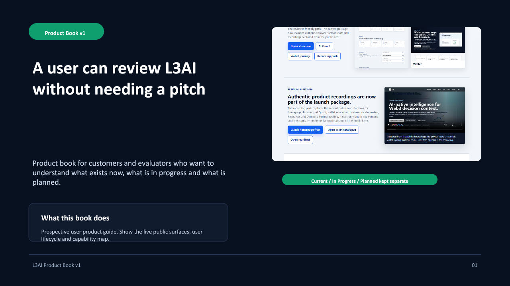
Speaker note
Position this as a product guide rather than a sales brochure.
02. The product starts at the public homepage.
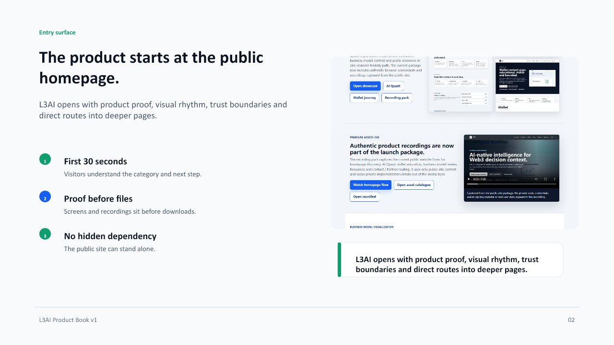
Speaker note
Explain why a public homepage is part of the product, not just marketing.
03. AI Quant is explain-first.
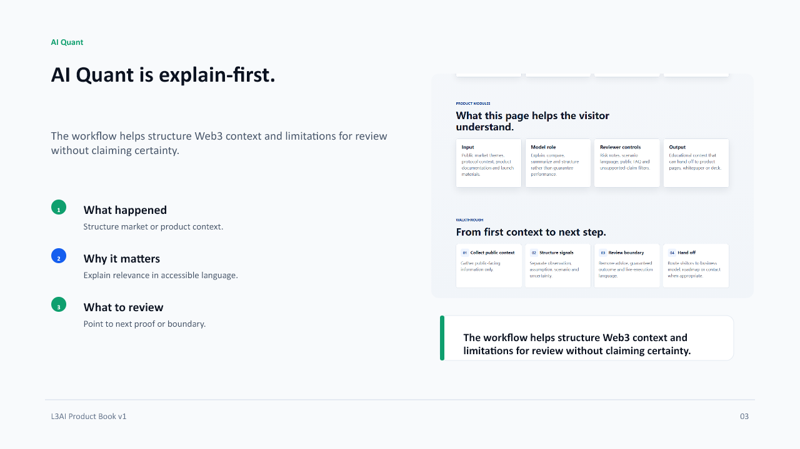
Speaker note
Keep the claim grounded. This is not a trading-performance slide.
04. Wallet-aware pages support safer review.
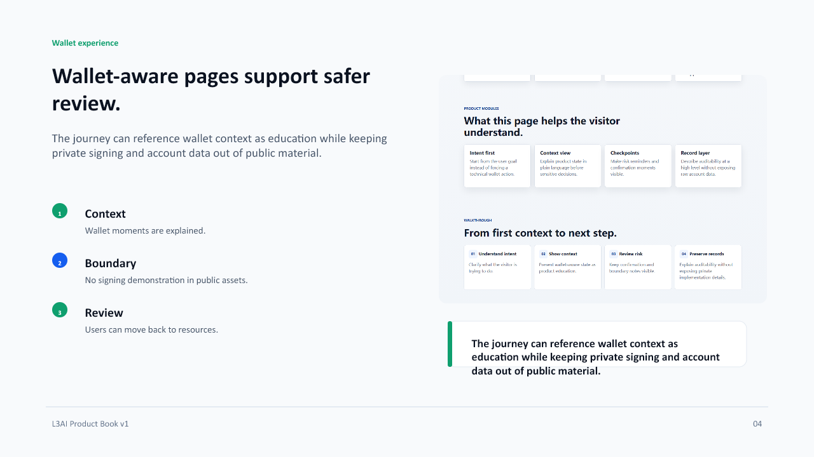
Speaker note
This slide should reduce fear around the wallet theme by emphasizing education and safety.
05. The business model page explains why trust matters.
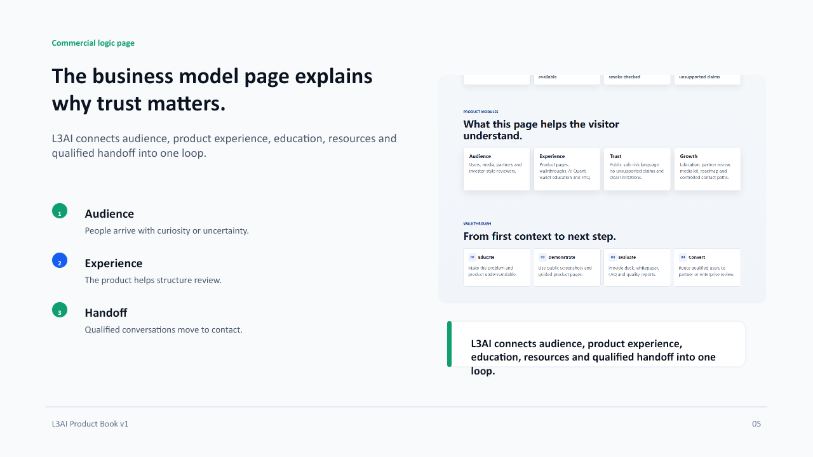
Speaker note
Translate business logic into a user-safe sequence.
06. Resources turn product claims into reviewable evidence.
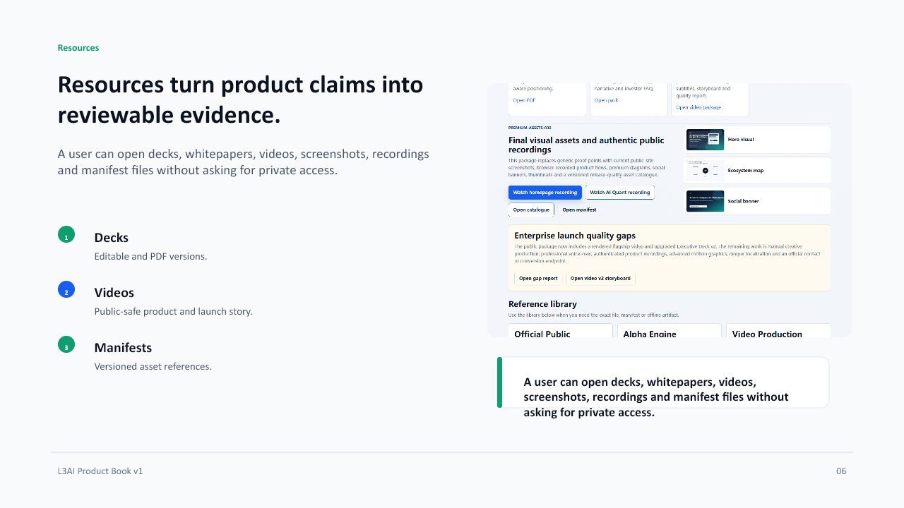
Speaker note
This slide is the bridge from product book to release package.
07. The user lifecycle is simple.
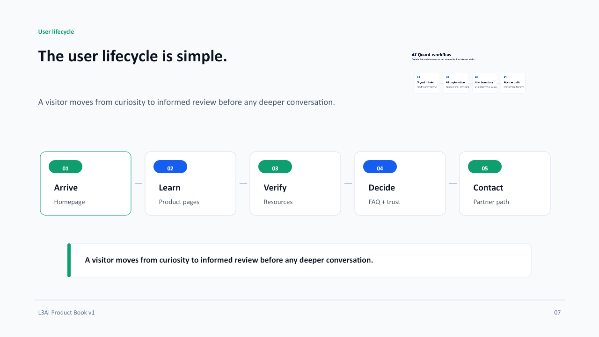
Speaker note
A clear lifecycle makes the product easier to explain to customers and partners.
08. L3AI is a public intelligence and education layer.
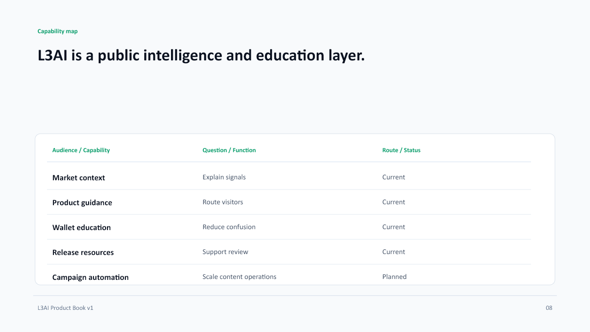
Speaker note
Use the status column to prevent future features from sounding current.
09. What users can review now.
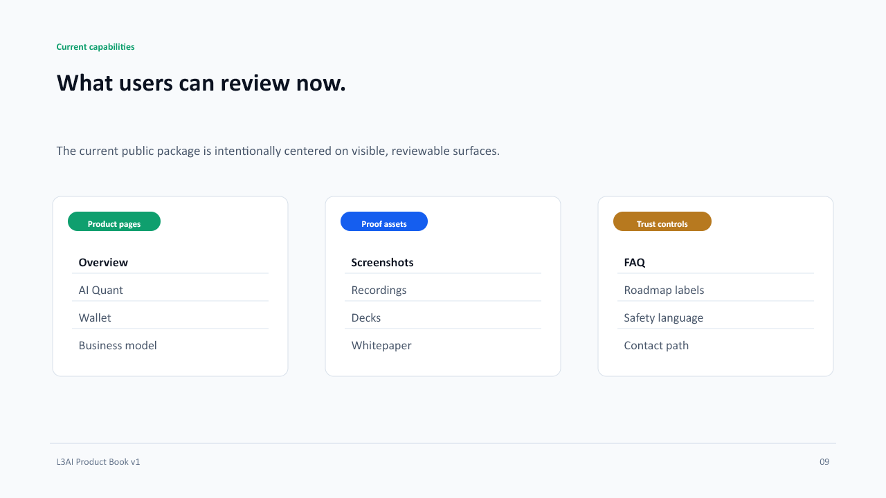
Speaker note
Current should mean public and visible, not aspirational.
10. What is being polished next.
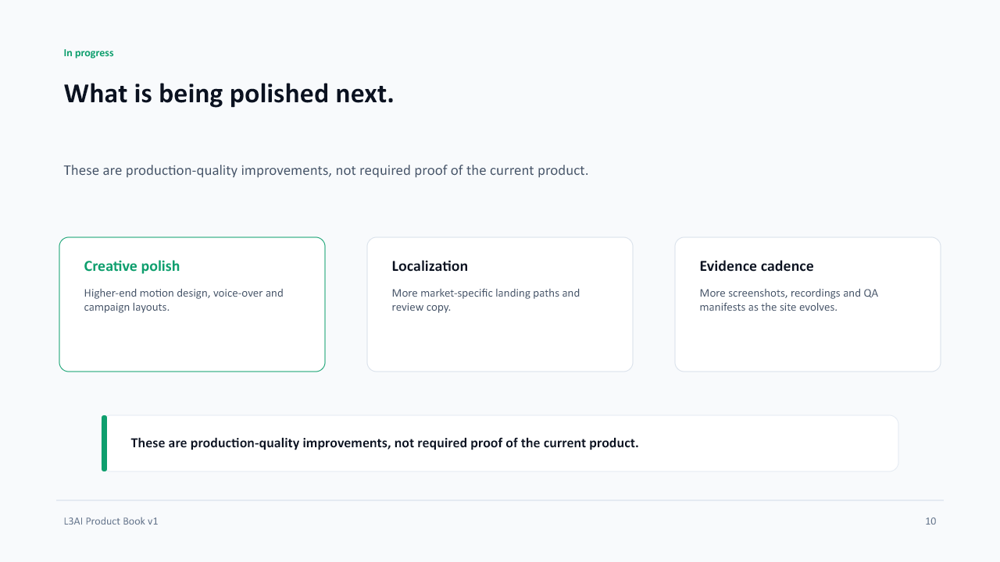
Speaker note
Make in-progress items sound like improvement work, not missing foundations.
11. What remains planned.
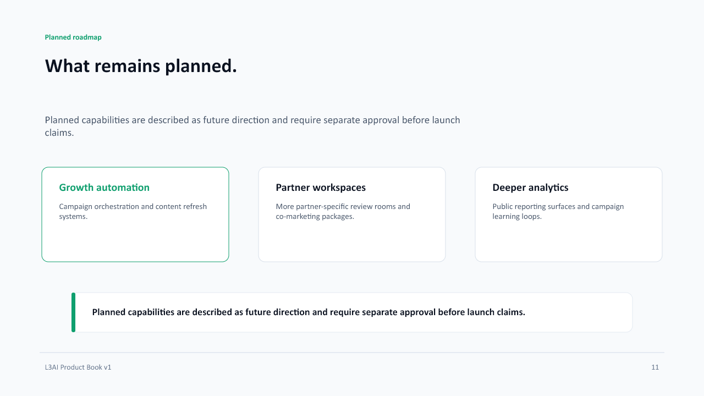
Speaker note
Keep planned items clearly future-facing.
12. The product book keeps the public boundary intact.
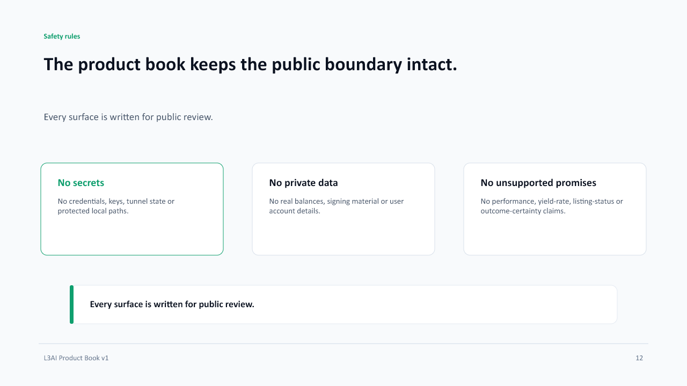
Speaker note
This safety slide is part of the product narrative, not an appendix.
13. A prospective user can verify the product in minutes.
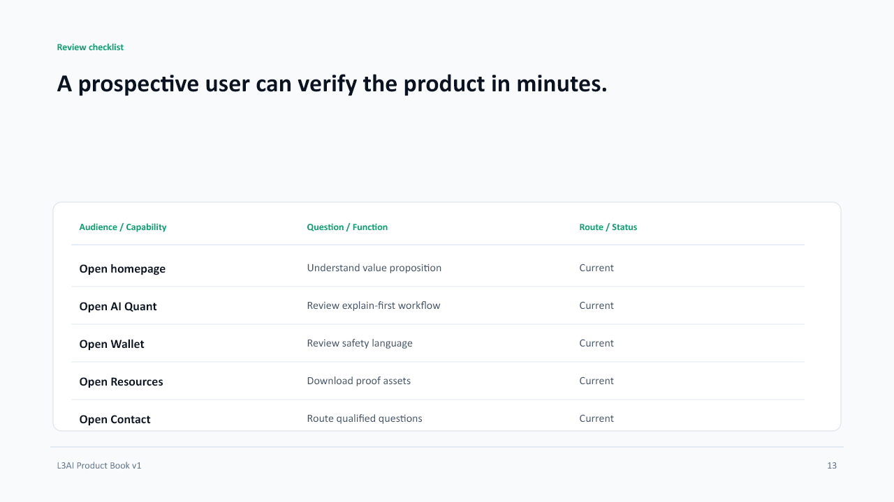
Speaker note
This is useful as a customer demo checklist.
14. The same public layer supports several roles.
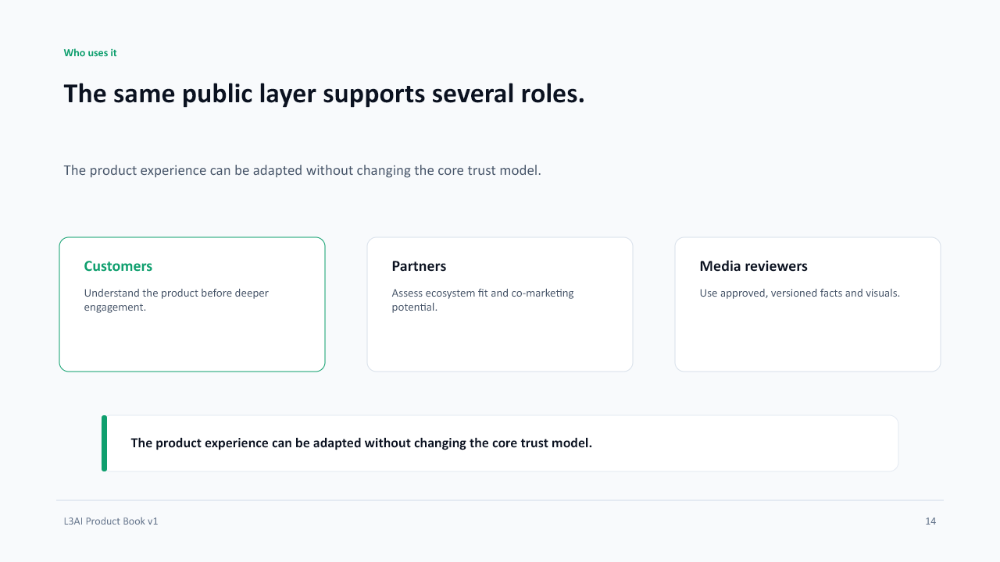
Speaker note
This bridges to the business partnership deck.
15. Review the product before reviewing the pitch.
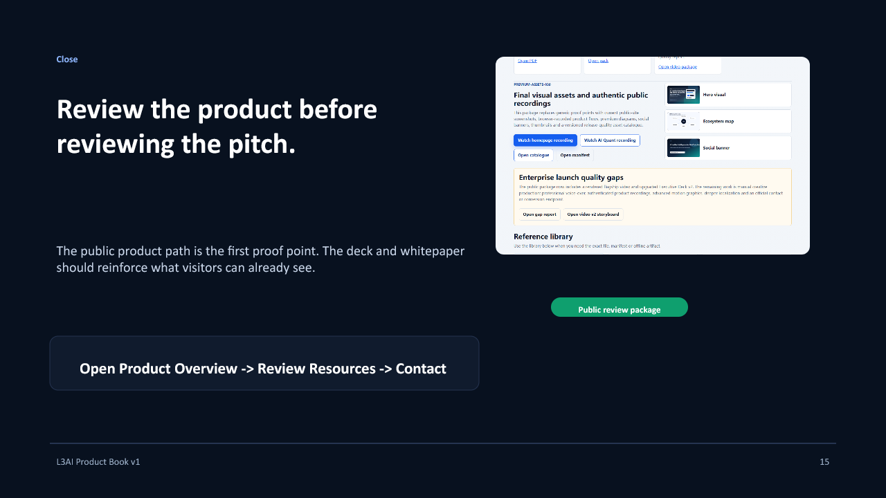
Speaker note
Close by sending evaluators back to the product surface.